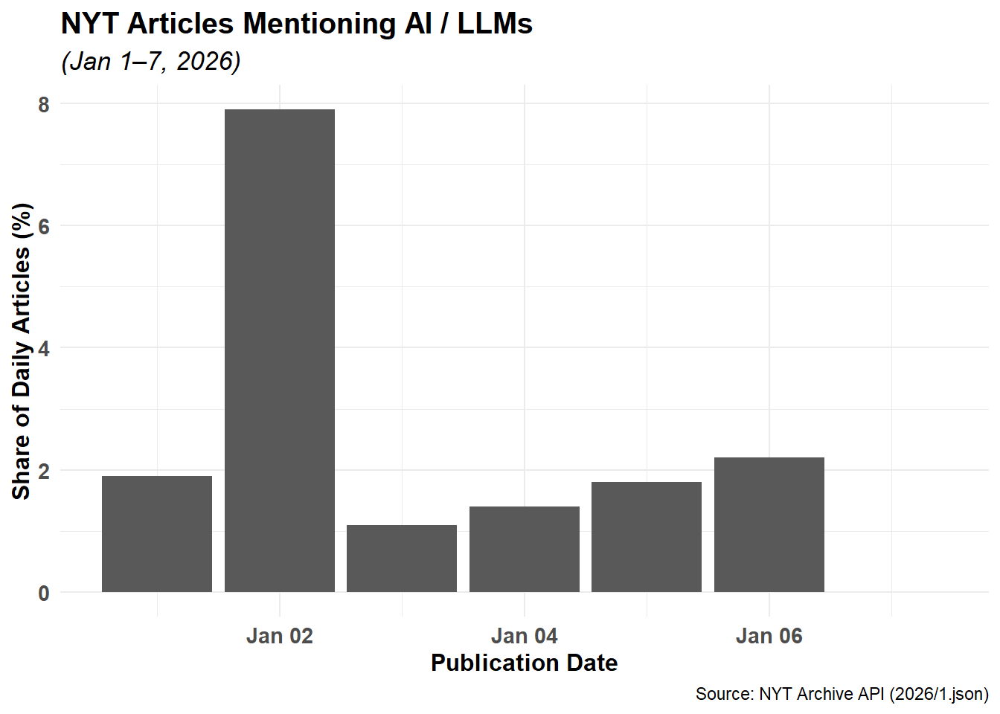
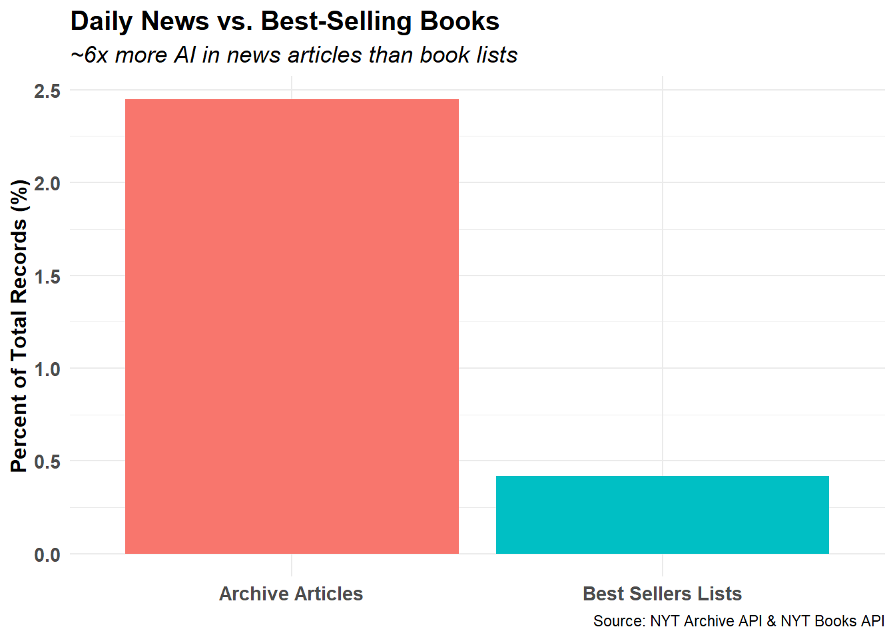
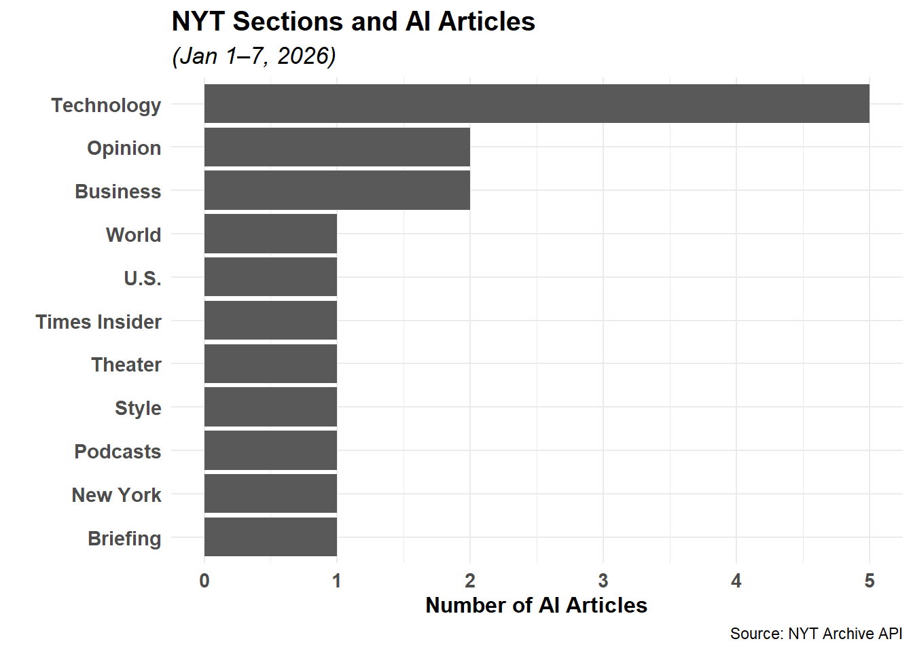

In this assignment, the New York Times (NYT) Application Programming Interface (API) is accessed in R to collect, tidy, and analyze data from two distinct endpoints. The primary objective of this codebase is to quantify and compare the prevalence of Artificial Intelligence (“AI”), Large Language Models (“LLMs”), and related concepts across NYT news coverage and best-selling books. To accomplish this, while managing payload sizes, the following endpoints and scopes are used:
Books API
This API provides data about books on the NYT Best Sellers lists. This can help determine the relevant prevalence and longevity of AI-focused books in the NYT lists.
Archive API
This API provides metadata about articles for a given month, extending back to 1851. This can be used to develop a deep historical viewpoint on the rise of these keywords in popular media.
Key engineering challenges addressed in this workflow include secure credential storage, local caching to minimize redundant API requests, unnesting complex JSON structures, and reconciling text searches across article metadata and book descriptions.
Approach
Credential management
Register for NYT Developer API credentials at https://developer.nytimes.com/ and store the API key and secret locally in an .Renviron file to prevent exposing secrets in the codebase.
Endpoint probing
Query the Books and Archive APIs using httr2 test scripts to verify 200 OK HTTP statuses and inspect the nested structure of the raw JSON payloads.
Data ingestion
Parse the JSON payloads into flat tibbles using jsonlite and tidyr::unnest(), select relevant columns, standardize dates and missing values, and cache the resulting data frames locally as .parquet files using the arrow package.
Keyword detection & aggregation
Construct a case-insensitive regular expression (regex) with strict word boundaries covering AI/LLM terminology. Apply this pattern across book titles/descriptions and article headlines, abstracts, and nested keyword lists (purrr::map_lgl), then summarize daily article frequency, front-page placement, and book longevity.
Codebase
API Access Testing
Prior to loading data in the R document, connections to each API are tested. API keys are stored in a local .Renviron file. Each request is structured with a NYT API URL and the keys. Each response is validated against the 200 OK exit code, and summary information printed. The chunk option cache: TRUE is enabled so that Quarto saves the results of these initial test requests locally. This avoids making redundant API calls on subsequent document renders, which respects API rate limits and accelerates compile time.
Code
if (Sys.getenv("NYT_API_KEY") =="") {stop("NYT_API_KEY not found in environment. Please set in .Renviron file.")}if (Sys.getenv("NYT_API_SECRET") =="") {stop("NYT_SECRET_KEY not found in environment. Please set in .Renviron file.")}books_url <-"https://api.nytimes.com/svc/books/v3/lists/full-overview.json"req <-request(books_url) |># Structures request object with credentialsreq_url_query(`api-key`=Sys.getenv("NYT_API_KEY"),`secret-key`=Sys.getenv("NYT_API_SECRET"))resp <-req_perform(req) # Loads response from requeststopifnot(resp_status(resp) ==200) # Stops if HTTP status is not 200 OKraw_json <- resp |># Parse JSON data into raw frameresp_body_string() |>fromJSON(flatten =TRUE)# Print raw json column namesnames(raw_json)
[1] "status" "copyright" "num_results" "results"
Code
# Print status coderaw_json$status
[1] "OK"
Code
# Print number of results in JSON objectraw_json$num_results
[1] 240
Code
books_df <-as_tibble(raw_json$results$lists) |>unnest(books)# Print names of columns in books dfnames(books_df)
if (Sys.getenv("NYT_API_KEY") =="") {stop("NYT_API_KEY not found in environment. Please set in .Renviron file.")}if (Sys.getenv("NYT_API_SECRET") =="") {stop("NYT_SECRET_KEY not found in environment. Please set in .Renviron file.")}archive_url <-"https://api.nytimes.com/svc/archive/v1/2026/1.json"req2 <-request(archive_url) |># Structures request object with credentialsreq_url_query(`api-key`=Sys.getenv("NYT_API_KEY"),`secret-key`=Sys.getenv("NYT_API_SECRET"))resp2 <-req_perform(req2) # Loads response from requeststopifnot(resp_status(resp2) ==200) # Stops if HTTP status is not 200 OKraw_json2 <- resp2 |># Parse JSON data into raw frameresp_body_string() |>fromJSON(flatten =TRUE)# check structure of raw jsonnames(raw_json2)
[1] "copyright" "response"
Code
names(raw_json2$response)
[1] "docs" "meta"
Code
names(raw_json2$response$meta)
[1] "hits"
Code
# Print number of results in JSON objectraw_json2$response$meta$hits
The attacker likely had links to the Islamic State and was possibly targeting a Christian church in the center of Aleppo, according to a government spokesman.
Both tests passed (status = 200 and real data appears in glimpses), so now data can be ingested and tidied to prepare for analysis.
Ingesting API data
Saving data into parquet files
To practice utilizing the Apache parquet format from the arrow package, data will be ingested and saved directly into this .parquet format before being read back into the workflow. Parquet files offer a few key benefits over other flat formats like .CSV:
Column compression significantly reduces file size and accelerates read times
Preserves R data types (such as Date columns) and complex nested lists (like the keywords list-column in the Archive data), which are not possible with .CSV files.
For each set of data, a new API request is sent if the parquet file does not pre-exist. In this case, the raw JSON from the response is transformed into a new data frame before saving locally. Here, the nested field books is unnested using the unnest() function from tidyr package.
Suicide Bomber in Syria Kills Security Officer in New Year’s Eve Attack
NA
The attacker likely had links to the Islamic State and was possibly targeting a Christian church in the center of Aleppo, according to a government spokesman.
Books API (GET https://api.nytimes.com/svc/books/v3/lists/full-overview.json):
Queried with the api-key parameter (retrieved securely via Sys.getenv("NYT_API_KEY")) to retrieve all current NYT Best Seller lists and their ranked titles in a single payload.
Archive API (GET https://api.nytimes.com/svc/archive/v1/2026/1.json):
Queried with path parameters year = 2026 and month = 1 along with the api-key query parameter to retrieve metadata for all NYT articles published in January 2026.
Summary of Data Cleaning Decisions
jsonlite::fromJSON(flatten = TRUE) was used to flatten nested fields (e.g. headline.main) and tidyr::unnest() was applied to books to expand the nested 19 best-seller lists into a single 240-row tibble.
Each article in the Archive set contains a nested keywords data frame. Rather than unnesting this frame, the purrr::map_lgl() function was applied to query inside the nested value column while maintaining one row per article.
Both APIs return empty strings ("") rather than null or NA for missing attributes. These were standardized to NA using the dplyr::na_if() function. dplyr::coalesce() was also applied during regex matching to prevent propagating NA downstream.
Data Analysis
Although this assignment does not call for analysis and findings, these two API endpoints can be used to answer a specific research question:
How does the surge in daily/monthly AI news coverage in the NYT Archive compare to the appearance and longevity (weeks_on_list) of AI/tech books on the NYT Best Sellers lists?
To address this question, a regular expression (regex) pattern is constructed that includes an assortment of keywords related to Artificial Intelligence and Large Language Models.
Code
# Regex pattern with strict word boundaries for AI / LLM conceptsai_pattern <-regex("\\b(AI|A\\.I\\.|Artificial Intelligence|LLM|LLMs|Large Language Model|ChatGPT|OpenAI|Generative AI|Neural Network|DeepMind|Anthropic|Machine Learning|Deep Learning|genAI|DeepSeek|Chatbot|Chatbots)\\b",ignore_case =TRUE)
The data frame holding data from the archive endpoint is transformed to add str_detect() columns for both the article headline and abstract against the regex pattern from above. The coalesce() function from the dplyr package is used to find the first non-missing entry in each record.
Table 1: Daily Summary of NYT Archive Articles and AI Keyword Matches (Jan 1–7, 2026)
pub_date
total_articles
ai_articles
ai_pct
front_page_ai
2026-01-01
107
2
1.9
0
2026-01-02
101
8
7.9
0
2026-01-03
90
1
1.1
0
2026-01-04
70
1
1.4
0
2026-01-05
114
2
1.8
0
2026-01-06
138
3
2.2
0
2026-01-07
74
0
0.0
0
A similar procedure is followed to prepare the data frame storing data from the books endpoint: new columns are added that match the records against the regex term.
Table 2: Summary of NYT Best Sellers Lists and AI Book Prevalence
total_books
ai_books
ai_pct
avg_weeks_ai
240
1
0.4
1
Visualization
The daily proportion of NYT articles mentioning AI-related keywords during the first 7 days of January 2026 is shown in Figure 1. A local maximum is observed on January 2, 2026, where almost 8% of all articles referenced AI topics (8 of 101). Other days saw proportions around 2%.
Code
archive_ai_summary |>ggplot(aes(x = pub_date, y=ai_pct)) +geom_col() +labs(title ="NYT Articles Mentioning AI / LLMs",subtitle ="(Jan 1–7, 2026)",x ="Publication Date",y ="Share of Daily Articles (%)",caption ="Source: NYT Archive API (2026/1.json)" ) +theme_standard()

Figure 1: Daily Share of NYT Articles Mentioning AI/LLM Keywords (Jan 1–7, 2026)
Comparing keyword prevalence between API endpoints ( Figure 2) highlights a contrast between the frequency of AI-mentions in daily articles vs book publishing. Across the 694 news articles between January 1 and January 7 2026, 2.45% (17 articles) featured AI-coverage, whereas only 0.42% (1 of 240 titles) appeared on the best-seller list. This represents a striking 6x difference in coverage frequency between the two mediums.
Code
endpoint_comparison <-tibble(endpoint =c("Archive Articles", "Best Sellers Lists"),total_records =c(sum(archive_ai_summary$total_articles), books_ai_summary$total_books),ai_matches =c(sum(archive_ai_summary$ai_articles), books_ai_summary$ai_books),ai_pct =round((ai_matches / total_records) *100, 2))endpoint_comparison |>ggplot(aes(x=endpoint, y = ai_pct, fill = endpoint)) +geom_col(show.legend =FALSE) +labs(title ="Daily News vs. Best-Selling Books",subtitle ="~6x more AI in news articles than book lists",x =NULL,y ="Percent of Total Records (%)",caption ="Source: NYT Archive API & NYT Books API" ) +theme_standard()

Figure 2: Comparison of AI Keyword Prevalence Across NYT Archive and Books APIs
The 17 AI-related articles in the NYT newspaper section can be dis-aggregated by section (Figure 3), demonstrating that coverage is not confined solely to the Technology desk, but extends to Business, World, Opinion, and Arts sections.
Code
archive_plot <- archive_df |>mutate(is_ai =str_detect(coalesce(headline, ""), ai_pattern) |str_detect(coalesce(abstract, ""), ai_pattern) |map_lgl(keywords, \(df) any(str_detect(df[["value"]], ai_pattern), na.rm =TRUE)) ) |>filter(is_ai, !is.na(section_name)) |>count(section_name, sort=TRUE)archive_plot |>ggplot(aes(x=n, y=reorder(section_name, n))) +geom_col(show.legend =FALSE) +labs(title ="NYT Sections and AI Articles",subtitle ="(Jan 1–7, 2026)",x ="Number of AI Articles",y ="",caption ="Source: NYT Archive API" ) +theme_standard()

Figure 3: Distribution of AI-Related NYT Articles by Newspaper Section
Conclusions and Recommendations
In summary, comparing data from NYT API endpoints indicates that AI topics have a higher footprint in daily journalism (2.45% of articles in January 1 - January 7 2026) than on the Best-Seller list (0.42% of books). This disparity reflects structural lag between the rapid publication cycle of daily reporting and the longer cycle of best-selling books.
An extension of this work could include building a deeper data set via a functional pipeline approach. Automating the data fetching process from the API would allow for analyzing trends from a longer historical timeframe. A 5-year archive (2021-10-01 through 2026-10-01) could be assembled by applying the function to a series of month-year combinations.
AI Disclosure and Citation
Google Gemini was consulted for assistance in structuring the purrr::map_lgl() function to query nested keywords data frames and refining the regular expression word-boundary pattern.
Google. (2026). Gemini 4.0 Argon [Large language model]. https://aistudio.google.com/. Accessed October 26, 2026.